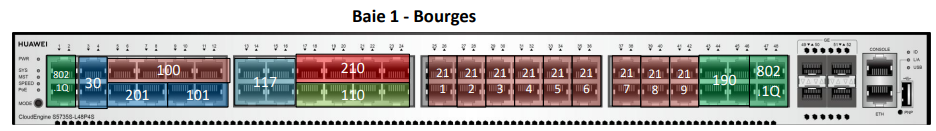
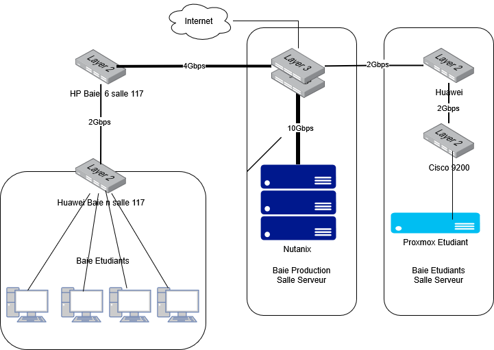
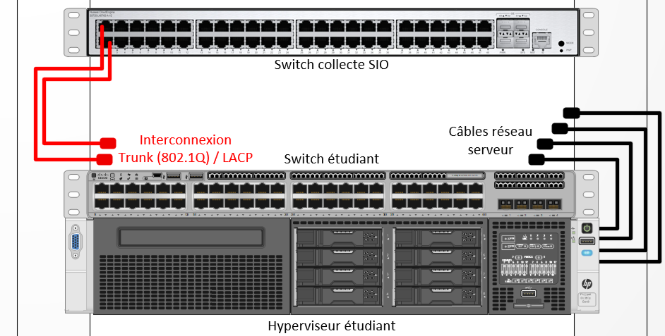

Infrastructure
Infrastructure du lycée Fulbert simulant le réseau SportLudique
L'infrastructure du laboratoire permet de simuler les différents sites de SportLudique tout en utilisant les équipements physiques et les services mis à disposition au lycée Fulbert.
Chaque groupe dispose de son propre environnement et devra progressivement construire et administrer l'infrastructure correspondant à son site.
Organisation des postes du laboratoire
Les machines physiques utilisées par les étudiants sont reliées aux prises Ethernet murales du laboratoire.
Les prises paires (2, 4, 6, 8) sont brassées vers les équipements dont vous avez la responsabilité et permettent de connecter les postes à votre infrastructure SportLudique.
Les prises impaires (1, 3, 5, 7) permettent de conserver la connexion au réseau pédagogique habituel du BTS. Elles ne doivent pas être déconnectées du switch HP ou Huawei et sont associées au VLAN 117.
Exemple pour la baie 1:

Schéma général

Travailler sur l'infrastructure SportLudique
Chaque site correspond à un îlot du laboratoire et dispose de son propre environnement réseau :
- Chartres ;
- Tours ;
- Orléans ;
- Bourges ;
- Blois.
Les systèmes clients seront principalement exécutés dans des machines virtuelles locales avec VirtualBox, configurées en mode bridge afin d'utiliser la connexion réseau de la machine physique.
La machine physique doit cependant rester intégrée au domaine pédagogique auquel elle a été affectée en début d'année.
Brassage des postes
Au début de chaque séance, ouvrez d'abord votre session Windows en utilisant le réseau pédagogique habituel, puis brassez votre poste sur une prise murale paire afin de rejoindre votre infrastructure SportLudique.
À la fin de chaque séance, reconnectez impérativement le poste à sa prise impaire afin de rétablir sa connexion au réseau pédagogique du BTS.
Gestion des serveurs
Les serveurs nécessaires au fonctionnement de votre infrastructure seront principalement déployés sous forme de machines virtuelles sur l'infrastructure Proxmox VE mise à disposition par vos enseignants.
Chaque site disposera également de ressources matérielles permettant d'expérimenter l'installation et l'administration de sa propre solution de virtualisation.
Les ressources physiques disponibles étant partagées et limitées, chaque machine virtuelle devra être correctement dimensionnée en fonction de son rôle.
Il est inutile d'attribuer une quantité importante de processeurs, de mémoire ou de stockage à une machine qui ne les utilisera pas.
Certaines applications, notamment les solutions de centralisation des journaux ou les SIEM, pourront en revanche nécessiter davantage de ressources. Le dimensionnement devra donc toujours être justifié par les besoins du service.
Convention de nommage
Chaque machine virtuelle doit posséder un nom permettant d'identifier immédiatement le site auquel elle appartient.
| Site | Préfixe |
|---|---|
| Chartres | CHA |
| Tours | TRS |
| Orléans | ORL |
| Bourges | BRG |
| Blois | BLO |
Convention de nommage obligatoire ☠️
Toutes les machines virtuelles devront commencer par le préfixe correspondant à votre site : CHA-, TRS-, ORL-, BRG- ou BLO-.
Toute VM ne respectant pas cette convention pourra être considérée comme non identifiée et supprimée de l'infrastructure sans préavis.
Gestion de votre matériel physique dans la salle des serveurs
Chaque groupe dispose d'équipements physiques dédiés à son site, notamment d'un serveur et d'un commutateur.
Il appartient au groupe de configurer et d'administrer ces équipements.
Le commutateur permet notamment de connecter votre infrastructure aux différents réseaux mis à disposition à travers les équipements de collecte administrés par vos enseignants.
Pour chaque site, le matériel mis à disposition est organisé comme suit :

Le matériel des différents sites étant installé dans la même baie informatique, son accès physique doit rester organisé.
Comme dans un datacenter, toute intervention physique devra faire l'objet d'une demande auprès d'un enseignant. L'accès pourra être limité à un groupe à la fois afin d'éviter les interventions simultanées sur les équipements.
Comptes techniques
Certains comptes techniques communs pourront être utilisés lors de la mise en place initiale des équipements.
Ces comptes ne doivent pas devenir les comptes d'administration utilisés quotidiennement. Au cours de l'année, vous mettrez en place des comptes nominatifs ou adaptés aux différents besoins d'administration.
Les mécanismes permettant de sécuriser et de tracer l'utilisation des comptes privilégiés seront étudiés progressivement.
Un mot de passe connu n'est pas un secret
Les identifiants techniques communiqués à l'ensemble de la promotion sont destinés à faciliter certaines opérations de mise en service ou de récupération.
Ils ne doivent jamais être considérés comme une protection suffisante pour un service réellement exposé.
Organisation générale du réseau
Le réseau SportLudique comprend plusieurs types de réseaux et périmètres :
- les réseaux locaux des différents sites ;
- les différents VLAN nécessaires à la segmentation ;
- le réseau d'interconnexion entre les sites ;
- les réseaux Wi-Fi ;
- la DMZ de chaque site ;
- les réseaux permettant de simuler les accès à Internet.
Une partie de cette infrastructure est administrée par vos enseignants afin de fournir l'interconnexion et les services communs.
Chaque groupe reste responsable de la construction, de la segmentation et de la sécurisation du réseau de son propre site.
Plan d'adressage IP
Le réseau général de SportLudique utilise le bloc :
Ce bloc permet de construire les différents sous-réseaux nécessaires aux sites et aux services de l'entreprise.
Les réseaux de DMZ utilisent des sous-réseaux appartenant au plan :
Le découpage du réseau devra permettre de séparer les différents usages et de limiter les communications inutiles entre les zones.
La gestion du plan d'adressage devra être tenue à jour dans la solution phpIPAM mise à disposition par vos enseignants.
Les plages d'adresses réservées aux équipements utilisant une configuration statique seront placées dans les adresses les plus hautes des sous-réseaux concernés.
Accès Internet simulés
Chaque site dispose de deux accès opérateurs simulés afin de permettre l'étude de la redondance et de la haute disponibilité de l'accès à Internet.
Afin d'isoler les connexions de chaque site, les deux accès disposent désormais de VLAN spécifiques à chaque baie.
| Site | Baie | FAI 1 | FAI 2 |
|---|---|---|---|
| Chartres | 1 | VLAN 101 |
VLAN 201 |
| Tours | 2 | VLAN 102 |
VLAN 202 |
| Orléans | 3 | VLAN 103 |
VLAN 203 |
| Bourges | 4 | VLAN 104 |
VLAN 204 |
| Blois | 5 | VLAN 105 |
VLAN 205 |
Infrastructure opérateur
Ces VLAN appartiennent à l'infrastructure simulant les réseaux des opérateurs.
Ils sont fournis par l'infrastructure commune du laboratoire et ne doivent pas être confondus avec les VLAN que vous mettrez en place à l'intérieur de votre site.
Les passerelles actuellement définies pour les différents accès sont les suivantes :
| Chartres | Tours | Orléans | Bourges | Blois | |
|---|---|---|---|---|---|
| FAI 2 | 183.44.28.1/30 |
183.44.37.1/30 |
183.44.45.1/30 |
183.44.18.1/30 |
183.44.41.1/30 |
| FAI 1 | 221.87.128.2/30 |
221.87.137.2/30 |
221.87.145.2/30 |
221.87.118.2/30 |
221.87.141.2/30 |
Passerelle ou adresse de votre équipement ?
Les adresses indiquées dans le tableau correspondent aux passerelles fournies par les opérateurs simulés.
Vous devrez déterminer l'adresse appartenant au même sous-réseau à configurer sur votre propre équipement.
Cas particulier : Blois
Le site de Blois ne dispose pas d'une baie dédiée identique à celles des quatre autres sites.
Ses équipements sont raccordés à travers un switch intermédiaire situé dans une baie qui n'est normalement pas accessible aux étudiants. Le groupe ne dispose donc pas directement d'un switch Huawei comme les autres sites.
Il devra adapter son infrastructure à cette contrainte et trouver une solution permettant de transporter correctement les différents VLAN nécessaires, notamment en utilisant les mécanismes de trunk 802.1Q et d'agrégation de liens (LACP).
La topologie de Blois sera donc légèrement différente de celle des autres sites : à vous de l'étudier et de proposer une configuration adaptée.
Accès Internet et DMZ
Chaque site devra disposer d'un périmètre permettant de séparer :
- le réseau interne ;
- la DMZ ;
- les accès opérateurs simulant Internet.
Le pare-feu placé entre ces différentes zones devra contrôler les communications et assurer les mécanismes nécessaires à la publication des services.
Les services devant être accessibles depuis l'extérieur seront placés dans la DMZ et pourront notamment comprendre des services Web, de transfert de fichiers ou d'autres services mis en œuvre au cours de l'année.
Pas de PASS ALL
La présence d'un pare-feu n'apporte aucune sécurité si celui-ci autorise tous les échanges.
Les règles définitives devront autoriser uniquement les flux nécessaires au fonctionnement des services.
Chaque règle devra pouvoir être expliquée et justifiée.
Les mécanismes de NAT/PAT et de redirection de ports permettront, lorsque cela est nécessaire, de publier certains services de la DMZ vers l'extérieur.
La mise en place de plusieurs accès opérateurs permettra également d'étudier les mécanismes assurant la continuité de l'accès à Internet en cas de défaillance d'un lien.
Services réseau
Au cours de l'année, votre infrastructure devra permettre le fonctionnement de différents services.
Les services DNS et DHCP seront notamment indispensables au fonctionnement normal des postes et des serveurs.
La disponibilité de ces services devra être prise en compte dans l'architecture mise en place.
Les autres services seront ajoutés progressivement en fonction des situations professionnelles.
Messagerie électronique
Des services de messagerie pourront être mis en œuvre afin de permettre les échanges entre utilisateurs et l'envoi de notifications par les différents outils de l'infrastructure.
Les adresses respecteront l'organisation DNS définie pour SportLudique :
Les choix techniques nécessaires à la mise en œuvre de ces services seront étudiés au cours de l'année.
Réseau Wi-Fi
L'infrastructure prévoit la séparation de deux usages Wi-Fi :
- un réseau destiné aux visiteurs, permettant l'accès à Internet sans donner accès au réseau interne ;
- un réseau destiné aux employés, permettant l'accès aux ressources correspondant à leurs besoins.
Ces réseaux devront être isolés et les règles de filtrage devront empêcher les utilisateurs du réseau visiteurs d'accéder au réseau interne.
Les mécanismes d'authentification et de sécurisation du réseau destiné aux employés seront étudiés lors des situations professionnelles correspondantes.
Administration, diagnostic et supervision
L'administration de l'infrastructure nécessitera la mise en place d'outils et de protocoles permettant de diagnostiquer les problèmes et de surveiller son fonctionnement.
Vous serez notamment amenés à utiliser :
- Wireshark pour analyser les communications réseau ;
- le port mirroring des commutateurs pour observer certains flux ;
- SSH pour administrer à distance les équipements compatibles ;
- SNMP pour collecter des informations sur les équipements ;
- une solution de supervision pour surveiller l'état du réseau, des serveurs et des services.
La supervision ne devra pas se limiter à vérifier qu'une machine répond au réseau. Elle devra permettre de déterminer si les services réellement proposés aux utilisateurs fonctionnent correctement.
Une solution de gestion du parc et des incidents devra également permettre de suivre les équipements et les demandes des utilisateurs.
Une infrastructure partagée
Chaque groupe est administrateur de son propre site, mais les différents sites font partie d'une infrastructure commune.
Une mauvaise configuration peut donc perturber votre propre environnement, mais également avoir des conséquences sur les autres groupes ou sur les services communs.
Avant toute modification importante, vous devrez comprendre sur quel équipement vous intervenez, à quel réseau il appartient et quelles peuvent être les conséquences de votre configuration.
Identifiants de VLAN disponibles
Vous devrez segmenter le réseau de votre site en utilisant des VLAN adaptés aux différents besoins de SportLudique.
Cependant, l'infrastructure du laboratoire utilise déjà de nombreux identifiants de VLAN pour son propre fonctionnement. Vous ne pouvez donc pas choisir librement n'importe quel numéro de VLAN.
Une plage d'identifiants est réservée à chaque site :
| Site | VLAN de management | VLAN utilisables |
|---|---|---|
| Chartres | 110 |
220 à 229 |
| Tours | 120 |
230 à 239 |
| Orléans | 130 |
240 à 249 |
| Bourges | 140 |
210 à 219 |
| Blois | 150 |
260 à 269 |
Le VLAN de management est imposé et réservé à l'administration de vos équipements.
Pour les autres réseaux, vous devrez choisir les identifiants nécessaires dans la plage attribuée à votre site.
Par exemple, si vous décidez de créer des VLAN distincts pour la comptabilité, les ressources humaines, les serveurs ou le Wi-Fi, vous devrez leur affecter des identifiants appartenant à cette plage.
Adaptez-vous à l'infrastructure existante
Dans une infrastructure réelle, un administrateur ne choisit pas nécessairement ses identifiants de VLAN à partir de 1.
Des VLAN existent déjà et certaines plages peuvent être réservées à d'autres usages.
Vous devez donc construire votre segmentation en tenant compte des identifiants disponibles sur votre site.
Pourquoi pas VLAN 10, 20, 30... ?
Certains identifiants de VLAN sont déjà utilisés par l'infrastructure pédagogique du laboratoire.
L'utilisation d'un VLAN en dehors de la plage attribuée à votre site pourrait provoquer des communications non souhaitées ou perturber d'autres services.
N'utilisez que les identifiants de VLAN attribués à votre site.
Ports disponibles
Sur les switches Huawei de collecte, les VLAN de votre plage sont mis à disposition de la manière suivante :
- le premier VLAN de la plage dispose de 4 ports configurés en mode access ;
- chacun des autres VLAN dispose de 2 ports configurés en mode access.
Ainsi, pour Bourges, le VLAN 210 dispose de 4 ports access et les VLAN 211 à 219 disposent chacun de 2 ports access.
La même organisation est appliquée à Chartres (220 à 229), Tours (230 à 239) et Orléans (240 à 249).
Cas particulier : Blois
Les VLAN 250 à 259 étant déjà utilisés par l'infrastructure pédagogique, la plage attribuée au site de Blois commence au VLAN 260.
Blois ne disposant pas directement d'un switch Huawei de collecte comme les autres sites, son raccordement devra également tenir compte de la topologie particulière décrite précédemment.